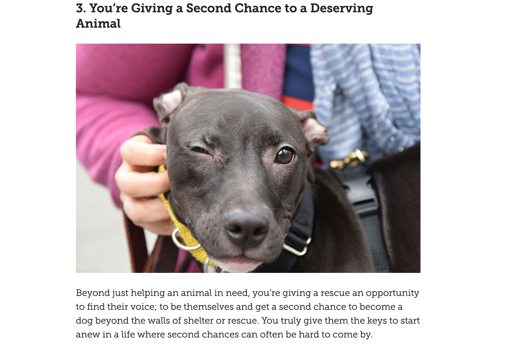
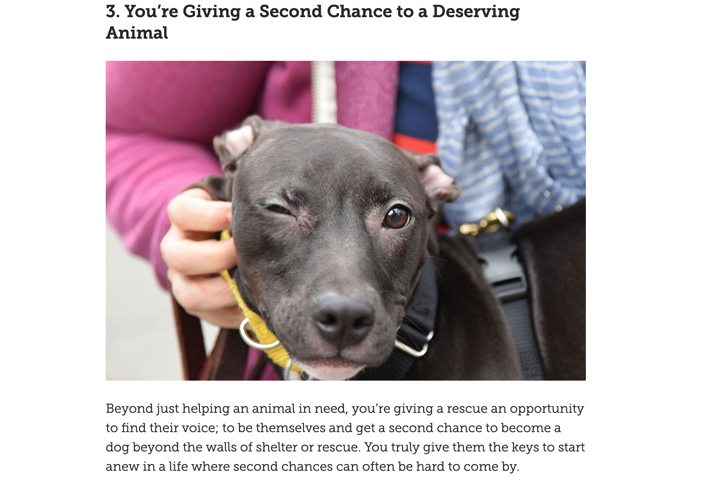
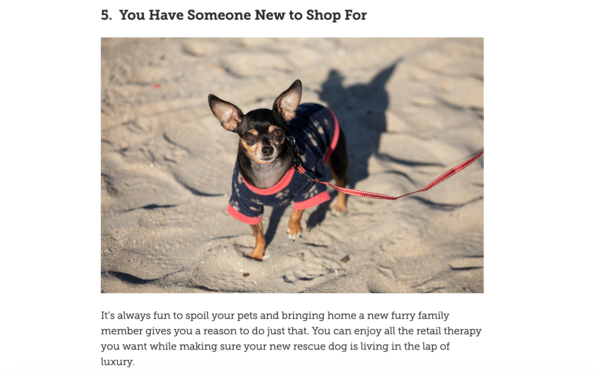
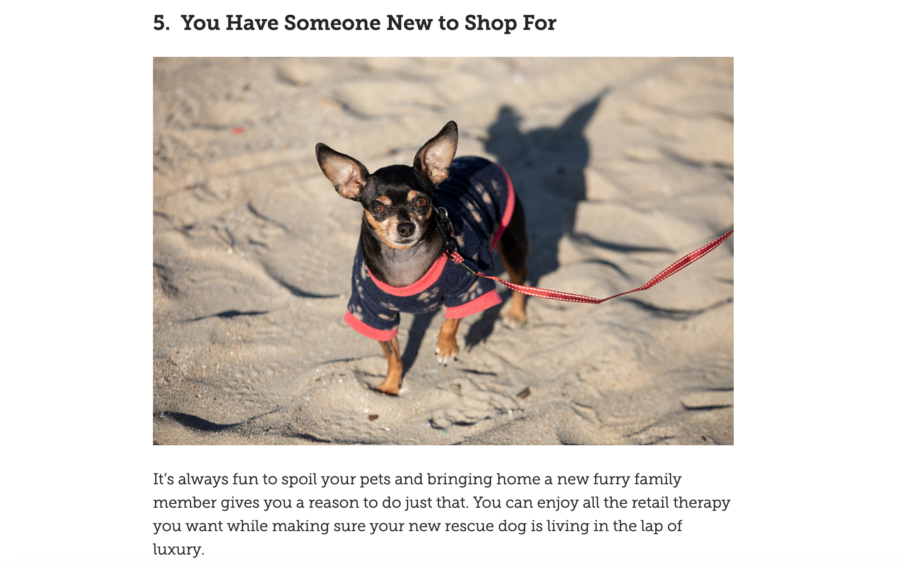
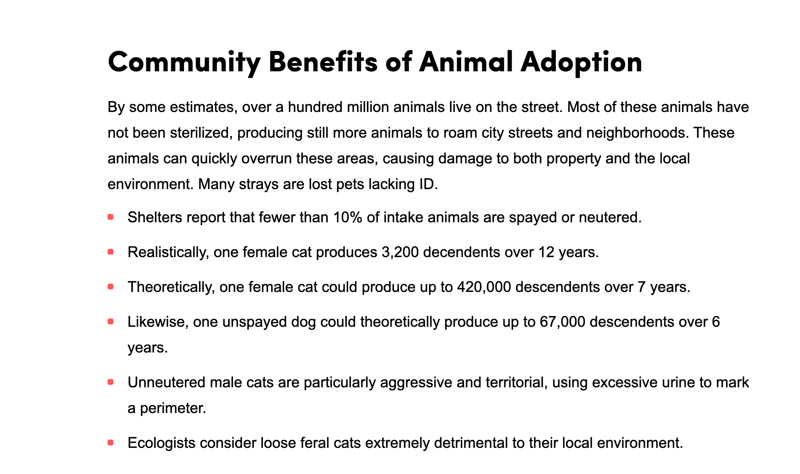
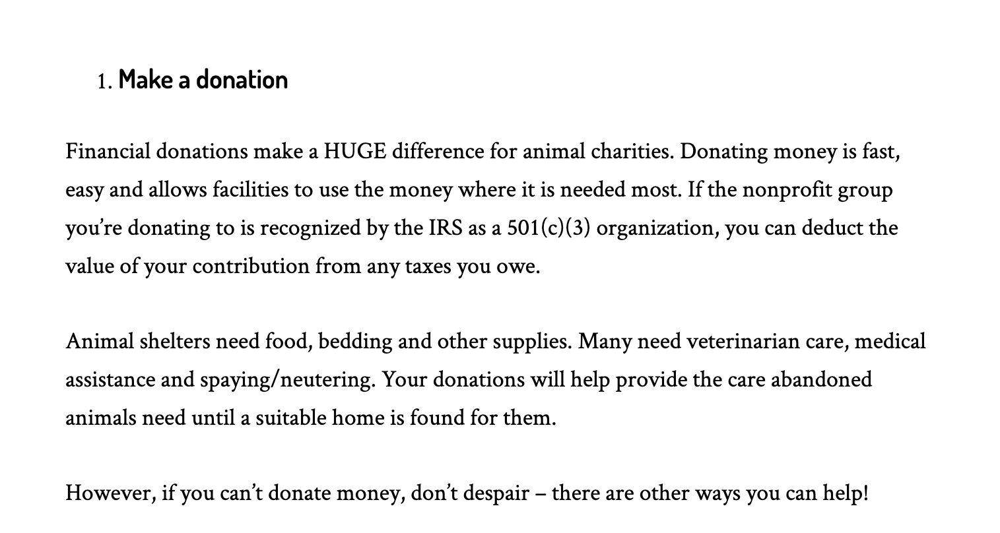
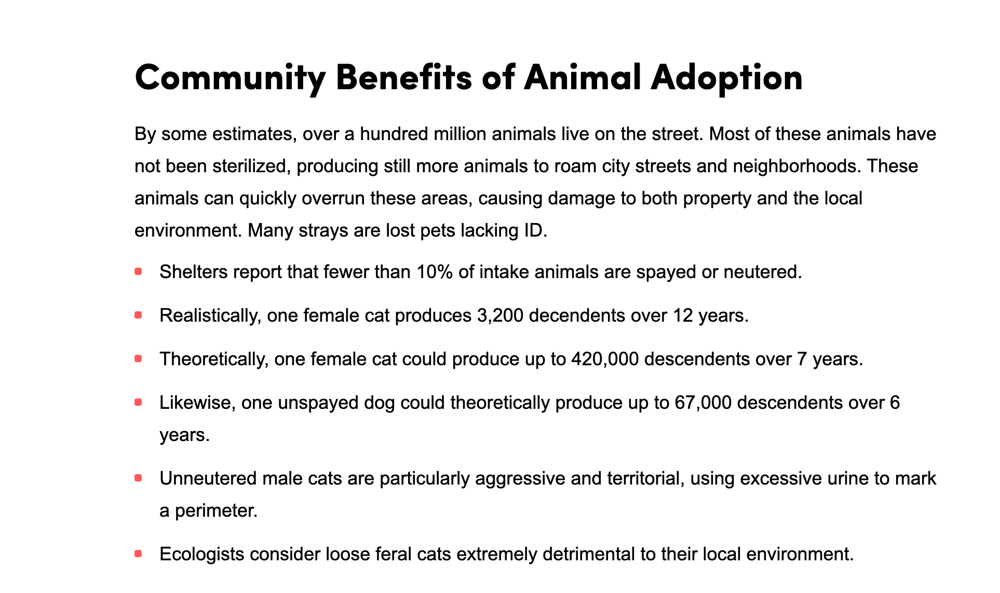
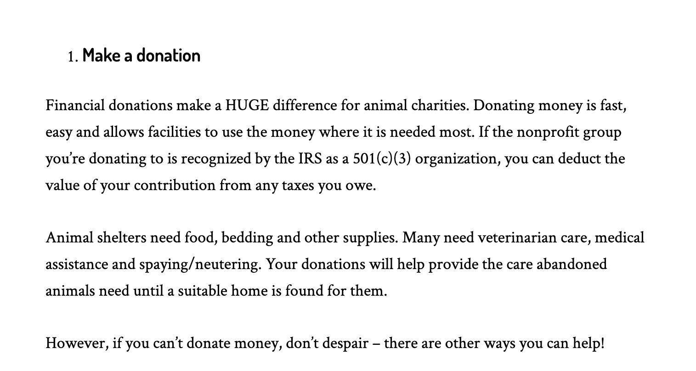

Benefits of Adopting a Pet from a Shelter
Adopting a pet from a shelter has many benefits. Not only is saving a puppy better than breeding one, it benefits multiple animals. Adopting a pet from a shelter makes a new place for another animal to come in. An animal from a shelter needs just as much love as a breeded one, if not more! These abanonded animals deserve a second chance at a loving place to call home. Adopting from a shelter fights back against cruel breeding that can be harmful to the animals as they may not recieve any love or care. Spending time with any pet can lower stress levels for you and your animal, and shelter animals have just as much love to give as you, the owner.
If adopting isn't an action that you want to take but still want to be involved in bettering the lives of animals, donating to shelter make a huge differnce for humane socities. Financial donations are easy for the shleters because they can put the money where they need it most. If you cant donate money, they also accept items for the animals, this is wehre sponsoring a pet for the Pickens County Humane Society would come in. There are other ways to pitch in besides donating money or items, you can donate time by volunteering. Humane Societies across teh country are in need of assistance, because of the overwhelming amount of intake rates and number of adoptions. The number of animals grow in shelters from stray animals brought from the streets by authorities or Good Samaritans, animals rescued from cruel homes and taken in for rehabilitation, and animals that were surrendered because they can no longer be taken care of by their families.

 

 



 


